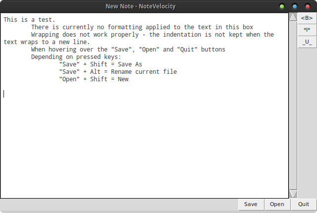
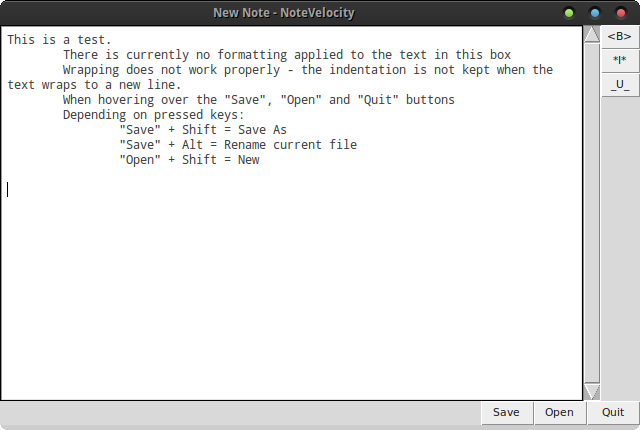

Screenshots
The interface
This is what NoteVelocity looks like while you're taking notes.
Settings
Here's the main easy-to-navigate settings menu.
Profiles
Setting the current subject profile
This is what NoteVelocity looks like while you're taking notes.
Here's the main easy-to-navigate settings menu.
Setting the current subject profile